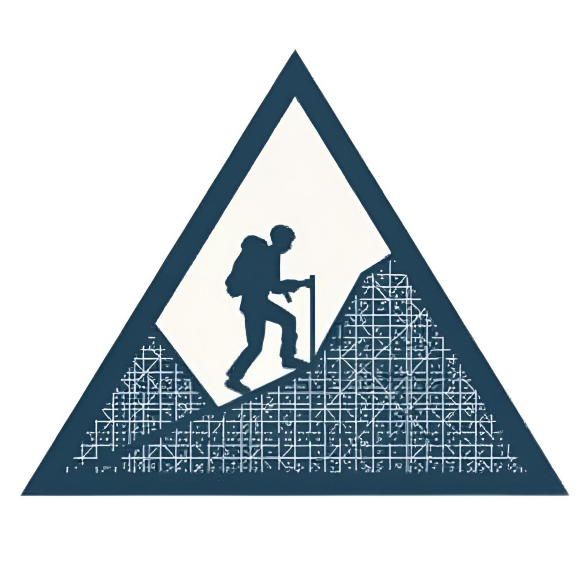

TopoTrail
Analisis Jalur Pendakian
👤
Radhyka Galih Pranata
LinkedIn
@radikaaa3
GitHub
Import Data
📁
Klik atau Seret File
SHP · KML · GeoJSON · GPX
SHP
KML
GeoJSON
GPX
Layers
🗂
Belum ada layer
Basemap
OSM
Satelit
Topo
Statistik Jalur
Jarak
—
km
Elev Maks
—
m
Elev Min
—
m
Beda Tinggi
—
m
Lereng Maks
—
°
Lereng Avg
—
°
Total Naik
—
m
Total Turun
—
m
Tingkat Kesulitan
—
Legenda Lereng
0–5°
— Datar
5–15°
— Landai
15–25°
— Agak Curam
25–45°
— Curam
45–60°
— Sangat Curam
>60°
— Vertikal
Data Demo
🏔
Gunung Lawu — Candi Cetho
⛰
Gunung Sumbing — Banaran
Sumber data:
wikiloc.com
+
−
⊞
📏
📍
0.000000
°,
0.000000
° | Z:
8
MEMPROSES...
📈
PROFIL ELEVASI & LERENG
Jarak
—
km
↑
—
m
↓
—
m
⏱
—
h
Hover untuk detail
▼
📈
Upload atau pilih data demo untuk melihat
profil elevasi & kemiringan lereng interaktif
Jarak
—
Elevasi
—
Lereng
—
Kelas
—
Lereng
Distribusi
Pos
Analisis
📐
Upload jalur untuk analisis kemiringan lereng
⏱
—
Jam
📍
—
Titik
📐
—°
Avg Lereng
⬆
—
Naik m
⬇
—
Turun m
🏔
—
Puncak m
#
Jarak m
ΔElev m
Lereng
Kelas
📊
Upload jalur untuk distribusi data
Distribusi Elevasi
Distribusi Kelas Lereng
Gain/Loss Kumulatif
📍
Tidak ada waypoint pada data ini
🔬
Upload jalur untuk analisis
berbasis jurnal ilmiah